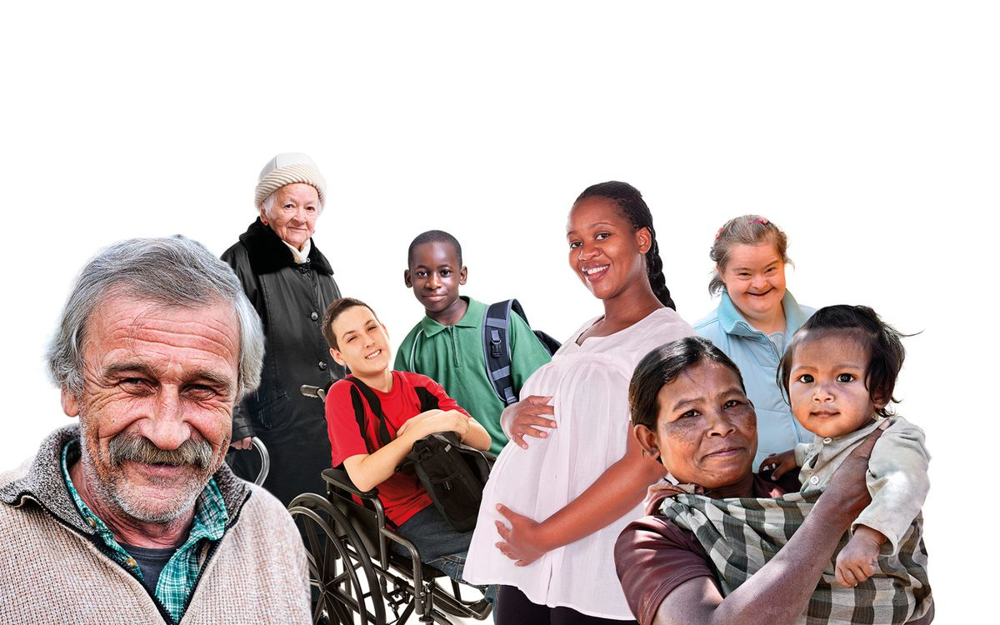

Chi siamo
Dal 1828 accanto a chi è più fragile, a Torino e nel mondo.
La nostra missione
Una casa per chi non ha nessuno
La Piccola Casa della Divina Provvidenza nasce a Torino nel 1828, quando san Giuseppe Benedetto Cottolengo apre un primo rifugio per i poveri malati che nessuno voleva curare. Da allora è un ente senza scopo di lucro che accoglie anziani, persone con disabilità, malati e bambini, con servizi di assistenza, cura ed educazione.
Al centro c'è sempre la persona, con la sua dignità: ogni ospite è accolto come in una famiglia, senza distinzioni.
Il nostro motto
«Caritas Christi urget nos»
L'amore di Cristo ci spinge

La Piccola Casa oggi
Oggi la Piccola Casa è presente in Italia e in quattro continenti. Accoglie e cura nelle sue case per anziani e per persone con disabilità, nell'Ospedale Cottolengo e nelle Scuole Cottolengo, e porta cure, scuola e accoglienza nelle missioni in Africa, America Latina e Asia.
Suore, sacerdoti, fratelli, operatori e volontari lavorano insieme perché nessuno resti solo.
97.000pasti caldi serviti a persone in difficoltà
1828l'anno in cui tutto è cominciato, a Torino
4continenti in cui siamo presenti con case e missioni
5ambiti di cura: anziani, disabilità, minori, salute, povertà
A chi va la tua donazione
Fondazione Cottolengo Solidale
Le donazioni fatte da questo sito vanno alla Fondazione Cottolengo Solidale ETS, l'ente del Terzo Settore che raccoglie i fondi per le opere della Piccola Casa in Italia e nelle missioni all'estero.
Tutte le donazioni possono usufruire dei vantaggi fiscali previsti dal Codice del Terzo Settore (D.Lgs. 117/2017). Conserva la ricevuta per la dichiarazione dei redditi.
Codice fiscale 97905980013
Documenti e bilanci
Trasparenza vuol dire poter controllare: scarica i nostri documenti.
-
Scarica PDF — Bilancio sociale
Bilancio sociale
Come usiamo ogni euro ricevuto e cosa abbiamo fatto nell'anno.
-
Scarica PDF — Bilancio d'esercizio
Bilancio d'esercizio
Il rendiconto della Fondazione Cottolengo Solidale ETS.
-
Scarica PDF — Statuto della Fondazione
Statuto della Fondazione
Scopi, organi e regole della Fondazione Cottolengo Solidale ETS.
Contiamo su tante persone
Volontari di ogni età donano il loro tempo al fianco degli ospiti, nelle attività e negli eventi della Piccola Casa.
Diventa volontarioChi aiutiamo
Quattro aree, un'unica famiglia. Scegli dove far arrivare il tuo aiuto.
-
-
Accoglienza
Una casa e una famiglia per persone con disabilità e per chi non ha più nessuno.
Scopri e dona -
Educazione
Scuola, sostegno a distanza e aiuto alle famiglie, perché ogni bambino possa crescere.
Scopri e dona -
Missioni internazionali
Cure, scuola e accoglienza nelle missioni del Cottolengo in Africa, America Latina e Asia.
Scopri e dona
Fai una donazione
Anche un piccolo gesto diventa un pasto, una cura, un posto dove sentirsi a casa.
Dona oraContatti
Tre recapiti per tre esigenze diverse: ti risponde direttamente chi se ne occupa.
Donazioni e informazioni
Ufficio Progetti e Raccolta Fondi
Via Cottolengo, 14 — 10152 Torino
Lasciti e testamento solidale
Informazioni riservate e assistenza